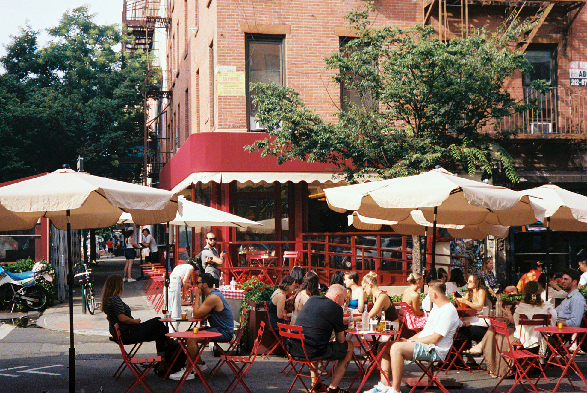

I want the streets to feel like mine,
not some bright maze that won’t slow down;
to claim a lane with steady breath,
unflinching in this frantic town.
not some bright maze that won’t slow down;
to claim a lane with steady breath,
unflinching in this frantic town.